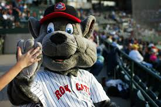

Kenya Korky The Cat
- The name of the Mascot is 'Kenya Korky The Cat'
- First appeared in The Dandy, Issue 1, 1937
- Created by James Crighton from the Bicolor cat family.
- Rex is a type of Mascot looks like dinosaur animal used in olympics in foot ball sport
Fun Facts About Mascot
- Korky still continued inside the comic, however, and a picture of him remained next to the Dandy logo until 1998
- a cat who behaves like a human and is accepted in a world of humans as only a comic character.
- Korky, whose look had remained virtually the same since the 1940s, now looked noticeably different, particularly in the case of his eyes
- Adult comic Viz parodied "Korky the Cat" in a strip entitled "Korky the Twat" as part of an ongoing feud with Dandy publishers D.C. Thomson.

Link for Index Page